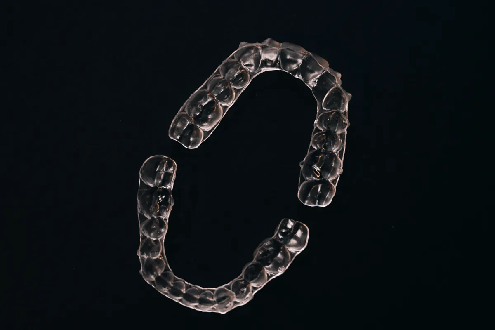

Aparelho fixo
Opção tradicional para diferentes movimentações dentárias, com ajustes e acompanhamento periódico.
Avaliação ortodôntica para entender sua necessidade e comparar as possibilidades de tratamento — dos aparelhos convencionais aos alinhadores.

A escolha considera objetivos, complexidade do caso, rotina e indicação clínica. A avaliação ajuda a comparar benefícios e limitações.
Opção tradicional para diferentes movimentações dentárias, com ajustes e acompanhamento periódico.
Alternativa fixa com componentes mais discretos, quando indicada para o planejamento do paciente.
Placas removíveis e transparentes, planejadas em sequência para casos compatíveis com essa modalidade.

O planejamento ortodôntico considera a mordida, a posição dentária, a saúde bucal e o objetivo que trouxe você à consulta.
As etapas podem variar, mas o tratamento começa sempre por um diagnóstico responsável.
Você conta o que deseja melhorar e tira as primeiras dúvidas.
A avaliação e a documentação indicada mostram as necessidades do caso.
A equipe explica as opções compatíveis, o plano e o orçamento.
Consultas periódicas permitem conduzir e monitorar o tratamento.

Praça Padroeira do Brasil, 145 · Centro · Osasco/SP. Consulte com a equipe os horários disponíveis para avaliação.
Consultar horáriosA modalidade e o prazo só podem ser definidos depois de avaliar as características do caso.
Nem todos os casos têm a mesma indicação. A avaliação mostra se alinhadores são adequados e quais alternativas devem ser comparadas.
O prazo depende das movimentações necessárias, da resposta individual e da colaboração com os cuidados recomendados.
O investimento varia conforme a modalidade, a complexidade e o acompanhamento previsto. O orçamento é apresentado após o diagnóstico.
A equipe precisa avaliar o tratamento em andamento, a documentação e as condições bucais antes de orientar uma transição.
Agende uma avaliação ortodôntica no Ateliê do Sorriso, em Osasco.
Agendar pelo WhatsAppResultados, modalidade, duração e valores variam conforme a condição clínica e a colaboração de cada paciente. Nenhum resultado é garantido.